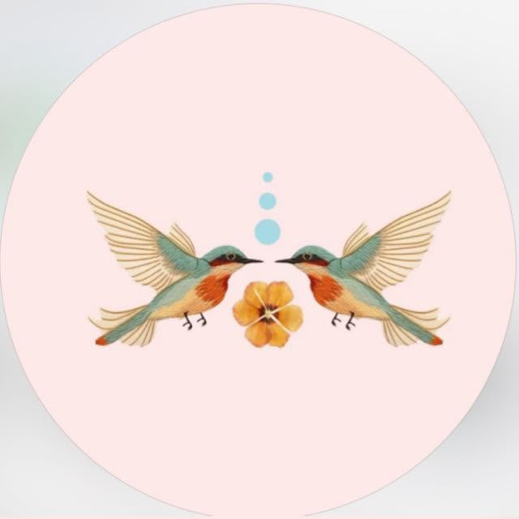
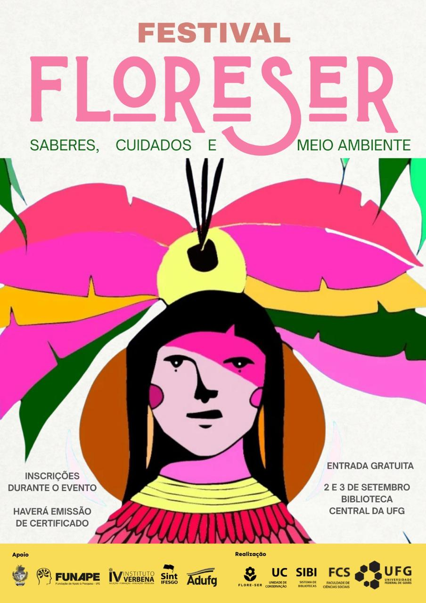

Projeto de Extensão · UFGFlore-Ser
Cerrado que floresce na cidade: um convite para ocupar os espaços públicos comuns como forma de (r)existência.
O ponto de partida
Praças, jardins e canteiros de Goiânia esperam por cuidado e vida.
Espaço comum negligenciado
- ◯Praças e canteiros ociosos, sem cuidado nem pertencimento da comunidade.
- ◯Cidade que impermeabiliza o solo e apaga o Cerrado nativo do cotidiano.
- ◯Moradores afastados dos espaços públicos que são de todos.
Território que floresce
- ◆Ocupação afetiva: mutirões de plantio devolvem vida ao espaço comum.
- ◆Nativas do Cerrado, PANCs e hortas no lugar do abandono.
- ◆Arte-educação, Clube de Leitura e festas reaproximam a comunidade da rua.
O que fazemos
Sete frentes que devolvem vida ao espaço público.
Plantio & Mutirões
Nativas do Cerrado, PANCs e hortas comunitárias, que já somam 13 espaços com atividade registrada.
Arte-Educação
Oficinas de lambes, murais e bordado que reescrevem a paisagem urbana.
Eventos Culturais & Ocupação
Feira Multicultural (8 edições), Clube de Leitura, Sarau e o Festival Flore-Ser: encontros que ocupam o comum como forma de (r)existência.
Escolas & Educação Ambiental
Plantios e formação com estudantes da rede pública, de CMEIs à escola municipal.
Biodiversidade do Cerrado
Inventário botânico com 14 espécies nativas, PANCs e medicinais em campo.
Rede de Parcerias
AMMA, EcomAmor, Arca Goiás, Jardim Botânico e a rede interna da UFG.
Extensão & Comunidade
Pessoas na equipe, vindas de 8 unidades da UFG, em campo formando e sendo formadas.
O que já floresceu · inventário 2024 a jul/2026
A colheita até agora, medida em campo.
Para onde vamos · plano de trabalho
Real × meta: o caminho até 2027.
Os números realizados vêm do inventário de campo do projeto; as metas são as do plano de trabalho até 2027. O painel público acompanha essa evolução em tempo real.
Como acompanhamos o florescer
Sete dimensões medem o território a cada mutirão.
O que o projeto entrega
Frutos concretos para a cidade e a comunidade.
Espaços ressignificados
Praças, campi e escolas ocupados com plantio: somente a Humanidades 2 reúne 447 plantas vivas desde 2024.
Arte-educação na rua
Lambes, murais e bordado coletivo que reescrevem a paisagem e convidam ao pertencimento.
Cultura que ocupa
Feira Multicultural, Clube de Leitura no parque, Sarau e o Festival Flore-Ser em setembro.
Biodiversidade urbana
14 espécies nativas, PANCs e medicinais reintroduzidas nos canteiros da cidade.
Rede de parcerias
AMMA, EcomAmor, Arca Goiás e Jardim Botânico somando mudas, saber técnico e alcance.
Painel público de dados
Site e painel abertos: cada espaço, ação e meta documentados e acompanhados por qualquer pessoa.
Por que o projeto se sustenta
Raízes firmes: método, parceria e permanência.
Coordenação institucional
Elis Veloso (SIBI/UFG) e Luiz Mello (FCS) conduzem o projeto de extensão dentro da UFG.
Execução planejada
Metas, cronograma e prestação de contas claros para o projeto em execução até 2027.
Universidade em rede
SIBI/UFG, Biblioteca Central, FCS, IESA, FE, PROAD, Agronomia e História em campo.
Parceiros externos
AMMA, Comurg, EcomAmor, Arca Goiás e Jardim Botânico; apoio de FUNAPE, Instituto Verbena, Sint-Ifesgo e Adufg.
Método participativo
Mutirões abertos: a comunidade planta, cuida e se apropria, e esse cuidado permanece.
Transparência & registro
Inventário de campo, painel público e prestação de contas sempre abertos.
Onde estamos e para onde vamos
Começamos pelos pilotos e já florescemos em 13 espaços.
- ✅13 espaços com atividade, incluindo os pilotos na Biblioteca Central e na Humanidades 2 (447 plantas desde 2024).
- ✅35 ações registradas: mutirões, oficinas, escolas e hortas.
- ✅8 edições da Feira Multicultural + Clube de Leitura e Sarau.
- ✅Site e painel públicos de dados no ar.
- →Festival Flore-Ser: 2 e 3 de setembro, na Biblioteca Central da UFG, com entrada gratuita.
- →Expandir para os 24 espaços do plano e chegar a ~10.000 pessoas.
- →Ampliar a rede de escolas e a comunicação dos espaços.
- →Área de gestão do painel para a equipe atualizar dados em campo.

Cerrado que floresce na cidade.
Ocupar os espaços públicos comuns como forma de (r)existência. Plantar, cuidar e pertencer, juntos.